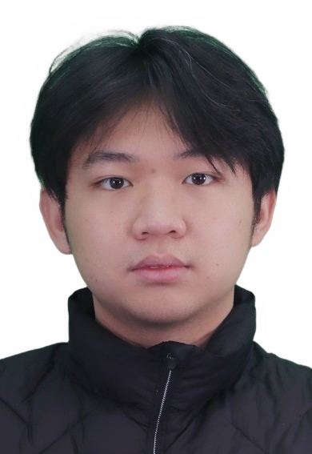
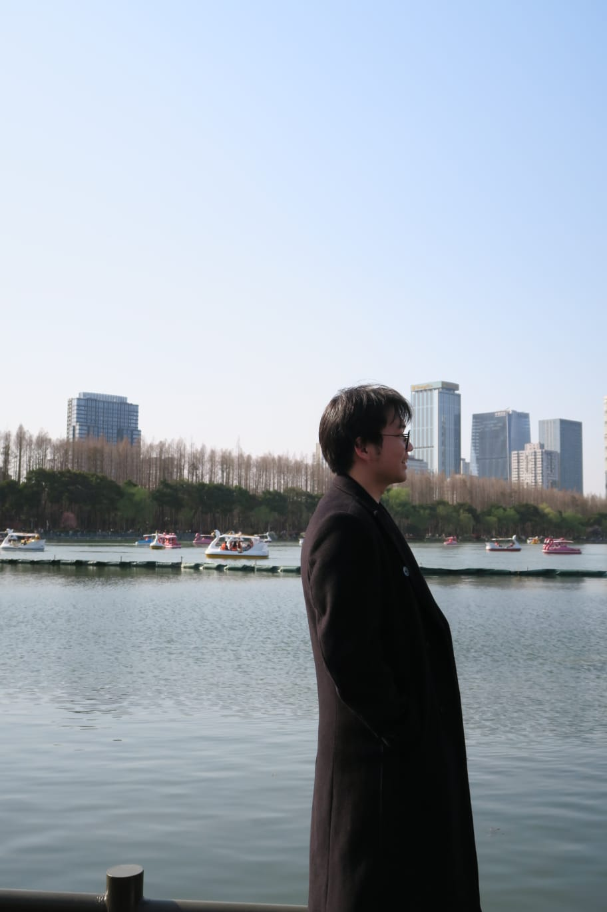

Hi, I'm Timothy Nathaniel Laurencio
Software Engineer | Tech Enthusiast | Front-End Developer
About Me
I am a |
Academic Background
Recent Bachelor of Engineering graduate in Computer Science from Nanjing Tech University. Specialized in software engineering and intelligent systems, combining rigorous coursework with hands-on experience in developing real-time data solutions and interactive applications.
Tech & Innovation
Passionate about modern software architecture, database design, and front-End Development.. Experienced in building scalable systems from scratch, writing clean and maintainable code, and leveraging backend frameworks to transform complex technical requirements into efficient, user-centric software solutions.
Lifestyle & Interests
Staying active through gym training, basketball, and badminton. In my leisure time, I enjoy playing the guitar at an intermediate level.
Captured Moments

